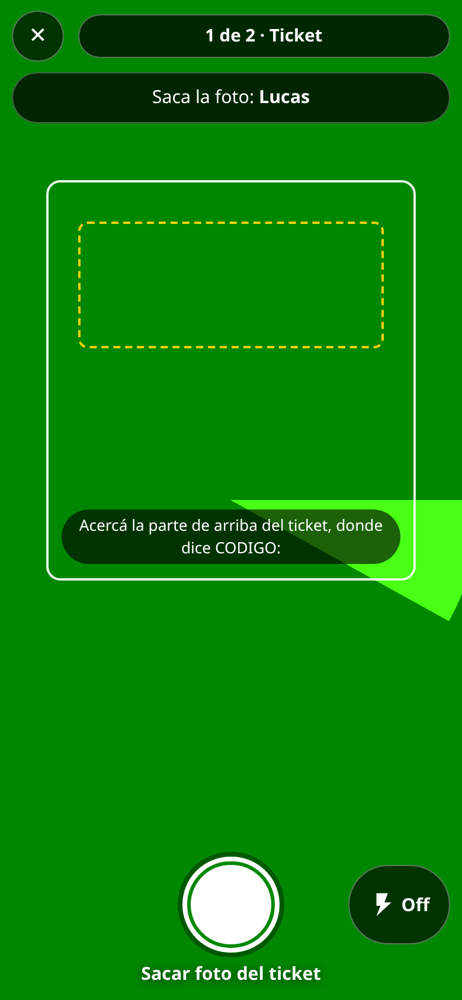
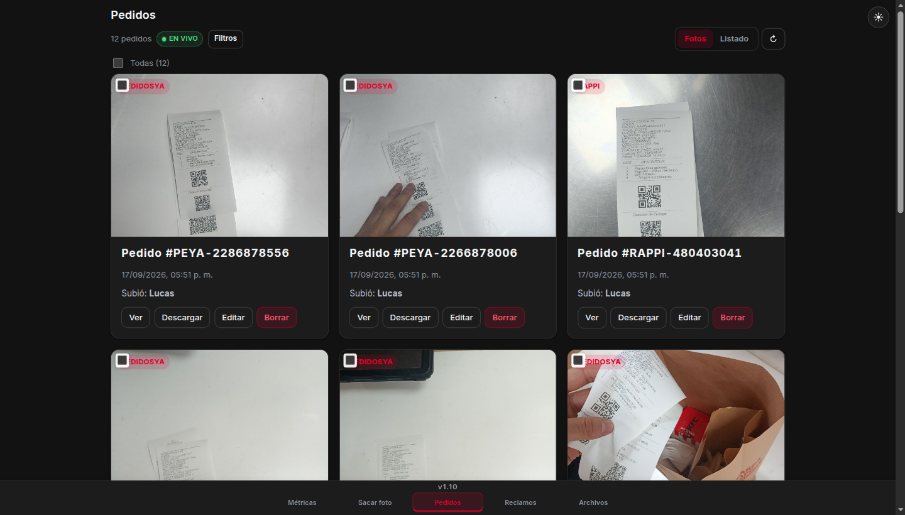
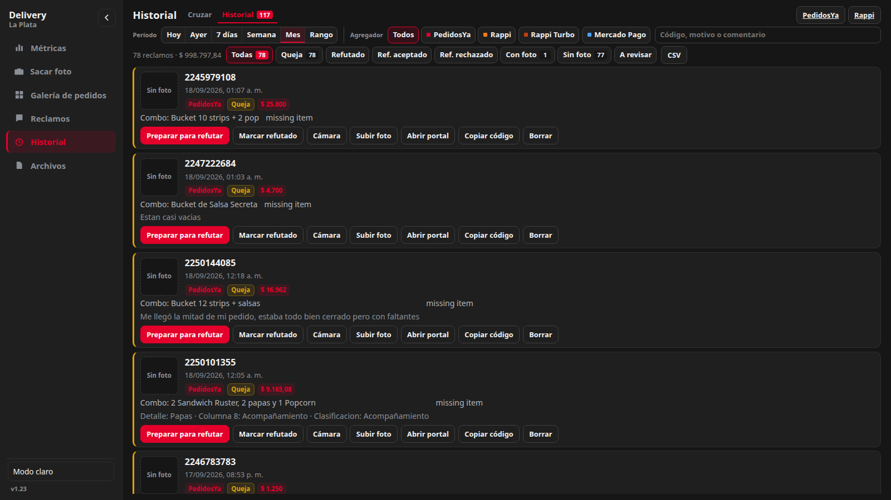

STAR-APP Delivery
Manual de uso
Guía corta para el equipo: cómo sacar las fotos, ver y buscar en la galería, marcar un pedido como queja y refutar. Si tenés una duda, mirá acá.
1 Sacar las fotos
- Entrá a Sacar foto y poné tu nombre (queda guardado para la próxima).
- Encuadrá el ticket con el código bien visible. Si hace falta, prendé el flash (botón abajo) o alejá un poco el celu.
- Paso 1 — Ticket: sacale la foto al ticket. Si dice «✓ Ticket — ahora la bolsa», vas bien.
- Paso 2 — Bolsa: sacá la bolsa completa, con el ticket a la vista. Cuando diga «Par listo ✓», listo.
- Seguí con el siguiente par: la cola sube las fotos y lee los códigos sola. Podés cerrar la app y sigue en segundo plano.
- La hora que queda en el pedido es la que sacaste la foto, aunque la subida tarde.
Lo que ves es lo que se sube. La foto que se abre o se descarga después es exactamente la misma que viste en cámara.
Avisos de calidad: «oscura» → prendé el flash · «borrosa» → apoyá el celu y esperá un segundo · «cortada» → alejá (tiene que entrar todo el ticket).

2 Ver y buscar en la galería
- Entrá a Galería de pedidos. Las fotos se ven de 100 en 100: abajo usá ‹ Anterior y Siguiente ›, o tocá un número para saltar de página.
- Buscá mientras escribís: el número del pedido («4821»), «PEYA…» o el nombre de quien sacó la foto. Lo que coincida se resalta.
- Filtros rápidos: Hoy, Ayer, Reclamos y Sin código. Para más, tocá Filtros (fechas, autor, agregador).
- Ver la foto completa: tocá Ver en la tarjeta. Lo que se ve ahí es lo mismo que se descarga.
- Acciones en lote: marcá con el checkbox Página para seleccionar las 100 de esa página (podés sumar selecciones de otras páginas) y descargar o borrar juntas desde la barra de abajo.

3 Marcar un pedido como queja
- En la galería, buscá el número del pedido.
- Tocá Editar en su tarjeta.
- Marcá la casilla «Pedido con reclamo».
- Tocá Guardar. Ya está: aparece en Historial como Queja y entra en las métricas.
Si el pedido ya está en la lista/Sheet del local, cruzalo en Reclamos y la app le completa motivo y monto solo.
4 El proceso de refutado
- Queja · falta refutar
- Refutado · en trámite
- Ref. aceptado · plata recuperada
- Ref. rechazado · plata perdida
- Queja vencida · pasó el plazo
- Andá a Reclamos y pegá la lista/Sheet del día. La app cruza cada queja con su foto.
- Si dice «Elegí la foto», tocá la correcta entre las candidatas.
- Tocá Preparar para refutar: descarga la foto del pedido, copia el código y abre el portal del agregador. Ahí pegá el código y subí la evidencia.
- De vuelta en la app, tocá Marcar refutado.
- Cuando el agregador responda: Ref. aceptado o Ref. rechazado.
Cada agregador tiene días para refutar desde el día del pedido (lo carga el encargado en Ajustes → Plazos de refutación; 0 = sin límite). Si está por vencer, la queja muestra «Vence en 2 d»; si se vence, queda como Queja vencida y ya no se puede refutar.

5 Dudas rápidas
- «La cola está larga y no sube»
- Seguí laburando: la cola baja sola y en orden. Si algo se traba, abrí la barra de cola y tocá Reintentar. Cerrar la app no la corta.
- «El pedido quedó como Código no encontrado»
- Se sube igual como evidencia. Se reintenta solo; también podés completarlo desde la galería → tarjeta → Completar código.
- «Me salió borrosa / oscura»
- En la tira del último par tenés Repetir unos segundos. Consejo: flash abajo, esperá el enfoque y que se vea todo el ticket.
- «Apareció Queja vencida»
- Pasó el plazo del agregador. Queda registrada en el historial y en métricas, pero sin opción de refutar.
- «¿Dónde veo la plata?»
- En Métricas: quejas del período, $ recuperado, $ perdido y los objetivos del local.
- «¿La hora es la de la subida?»
- No: es la hora en que se sacó la foto, aunque la cola tarde o la app se haya cerrado.